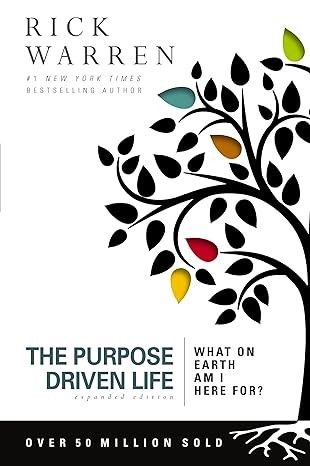

Inspiration
Christian books worth picking up.
Widely loved books on purpose, courage, joy, love, peace, a changed life, gratitude, and a steady mind. Each cover is shown whole.

The Purpose Driven Life
Rick Warren · Purpose
The Hiding Place
Corrie ten Boom · Courage
Love Does
Bob Goff · Joy
Crazy Love
Francis Chan · God’s love
Peace with God
Billy Graham · Peace
The Cross and the Switchblade
David Wilkerson · A changed life
One Thousand Gifts
Ann Voskamp · Gratitude
Battlefield of the Mind
Joyce Meyer · A steady mind